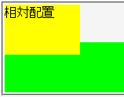

ある要素に設定した背景が、その要素のマージン領域にまで表示されることがある。
<div style="background:lime;"> <div style="margin-top:3em;"> <div style="position:relative; top:-3em; width:6em; height:4em; background:yellow;">相対配置</div> </div> </div>
相対配置したdiv要素（背景が黄色）は祖先のdiv要素（背景が黄緑色）の内容領域からはみ出させています。バグが発生している場合、相対配置したdiv要素のボックス上辺まで黄緑色で塗りつぶされるそうです。
※この例示はMacIEバグ023のため、期待する結果（Netscape7.1のスクリーンショットを参照）にはなりません。
Netscape7.1標準モード
考えられる原因：
該当ページは
div.a
h2 span.a /h2
div.b
div.c
h3 span.b /h3
本文
/div.c
/div.b
div.d
コメント
/div.d
/div.a
というような構造です。
スタイルシートでdiv.aの定義にbackground-colorとbackground-imageが設定されています。（ほかにもたくさん細々）
で、見た目上、h2の部分を除いたdiv.bとdiv.dが一続きの囲みで囲まれるようにしてあり、背景の塗りと右の枠線に、div.aのbackground-colorとbackground-imageが適応されています。
ところがMac IEで見ると、h2の部分にもdiv.aの背景の塗りと右枠線が出ているのです。
h2{
margin:100px 0px 0px 0px;
padding:0px;
background-image:url("ｈｔｔｐほげほげ");
background-repeat:no-repeat;
background-position:top right;
font-sixe:x-small;
}
div.a{
margin-right:10%;
background-color:#333388;
background-image:url("ｈｔｔｐもこもこ");
background-repeat:repeat-y;
background-position:right;
}
span.a{
position:relative;
z-index:1;
top:-100px;
left:-14px;
display:block;
padding-top:50px;
padding-left:60px;
width:490px;
height:110px;
background-image:url("ｈｔｔｐのこのこ");
background-repeat:no-repeat;
background-position:top left;
cursor:hand;
font-family:"System", monospace;
font-size:x-large;
}